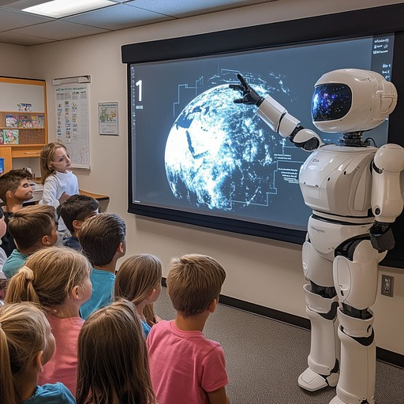
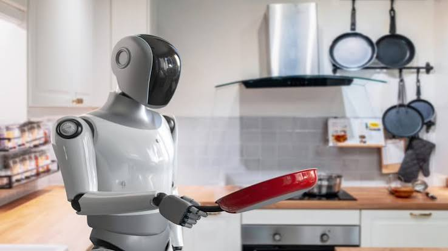
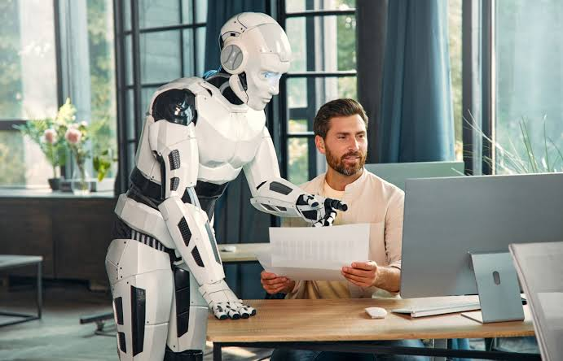
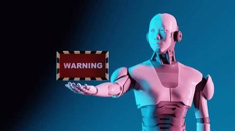

The future of robotics
Robots will keep changing how we learn, live and work. This page looks at four areas: teaching, everyday life, manufacturing, and the risks that come with these changes.
1. The future of robots in teaching
Robots are likely to play two roles in the classroom of the future. The first is as a learning tool: when students build and program a robot, ideas from maths, physics and coding become concrete and easy to test. The second is as a helper for teachers, in the form of social robots that can read a story, ask questions or lead a short activity for a group of students.

With the help of artificial intelligence, a robot tutor could adapt to each learner, repeating an explanation patiently or giving harder exercises to a fast student. Language learning is a promising example, since a robot partner lets students practise speaking without worrying about embarrassment. Researchers study this field under names such as educational robotics and intelligent tutoring systems.
Even so, robots are unlikely to replace teachers. They cannot offer the empathy, judgement and motivation that a good teacher gives. Schools will also need to protect student data, train teachers to use the new tools, and make sure that expensive equipment does not widen the gap between rich and poor classrooms.
2. The future of robots in everyday life
Many people already live with robots without thinking about it, from robot vacuum cleaners to automatic lawn mowers. In the future, home robots may become more flexible, able to tidy rooms, carry objects or help with simple cooking instead of doing only one job. Progress in sensors, batteries and artificial intelligence is making this step more realistic.

Outside the home, robots may change healthcare, transport and care for older people. Assistive and social robots could offer reminders and company, while powered exoskeletons may help people walk again after an injury. Delivery robots and self-driving vehicles may also change how goods and people move through cities.
Before robots become truly common, several problems must be solved. Prices have to fall, safety has to be proven in crowded and unpredictable places, and people must feel able to trust machines that share their living space. Clear rules about privacy will also be needed, because home robots see and hear a great deal.
3. The future of robots in manufacturing
Factories were the first place where robots were used on a large scale, and manufacturing will probably remain the area where robots change work the most. Traditional industrial robots are strong and precise but usually work behind safety fences. Newer collaborative robots, or cobots, are designed to share a workspace with people and take over heavy or repetitive steps.

Artificial intelligence and better cameras are making production more flexible. A robot can be reprogrammed quickly for a new product, which helps factories make small batches instead of only long production runs. Machine vision can spot tiny defects, and autonomous mobile robots can carry materials between machines. Together these ideas are often described as part of the Fourth Industrial Revolution.
This change will not only affect machines, it will also affect workers. Some repetitive jobs may disappear, while new roles appear in programming, maintenance and supervision of robot systems. Companies and governments will need to invest in training so that workers can move into these new roles rather than being left behind.
4. Possible threats of robots in the future
Robots bring large benefits, but they also create risks that society should discuss early, before problems appear. Most of these risks do not come from robots deciding to cause harm, but from how people design, control and use them. For that reason, rules, transparency and human oversight are an important part of the solution.

The best-known concern is work. Automation may remove some jobs and change many others, a topic known as technological unemployment. Other concerns are privacy, since robots with cameras and microphones can collect personal data, and safety, since a software or sensor error near people could cause an accident. A hacked robot could also be misused, so strong cybersecurity is essential.
A more serious debate surrounds lethal autonomous weapons, which could select targets without human control, and the wider field of robot ethics. Societies still have to decide who is responsible when a robot causes harm: the designer, the owner or the manufacturer. Clear laws and international agreements will help ensure that robots remain tools that serve people. There are several films that describe about this threat, noticable are Terminator(1984) Terminator(1984) and The Matrix(1999)